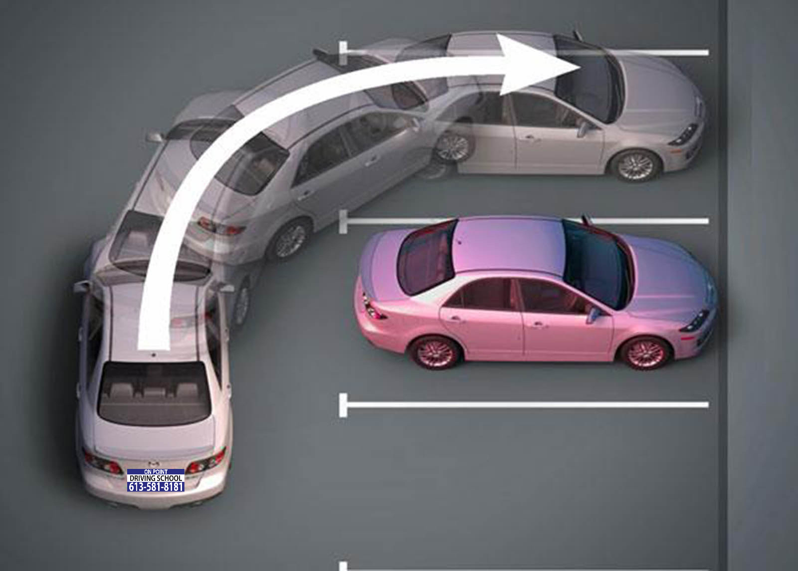

1061 Merivale Road, Suite #205, Ottawa ON, K1Z 6A9
Phone: 613-581-8181, Cell: 613-818-8100
Hashim
10. Downhill Parking With the Curb
- Signal to the right.
- Slow down.
- Gradually pull car over to the right side of the curb.
- Stop the car completely, close to the side of the curb, between 6in - 1ft away.
- Keeping the car in drive, turn the wheels all the way to the right.
- Slowly move the car to the right until you touch the curb.
- Stop the car, putting the gear in the park position with the hand brake up or on.
11. Forward Parking
- Keep the car straight in the centre of the road.
- Line your shoulder up with the middle of the parking spot before the spot that you wish to park in.
- Allow the car to move while turning the steering wheels completely to the left, until you are straight in line with the desired parking spot.
- Turn the wheel twice (bring white tape to the top of the steering wheel two times).
- Bring the car inside the spot, stopping before the end of the spot.
- Stop the car, putting the gear in the park position & pull up or turn on the handbrake.
